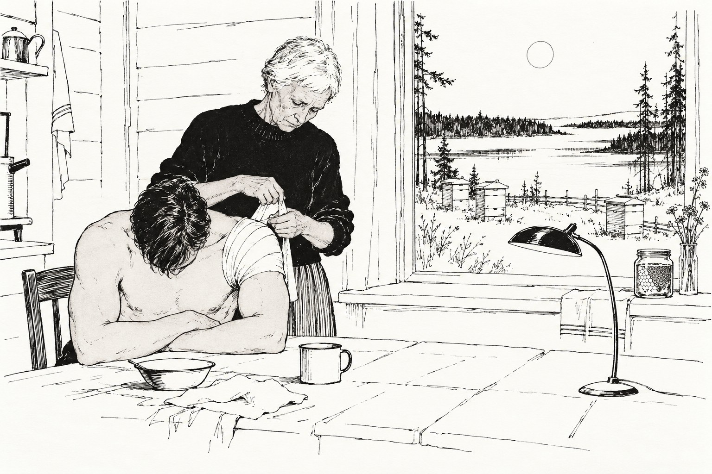

Побывка

Глава первая.
Кирилл Зарецкий не пришёл на плановый осмотр ни в первую неделю побывки, ни во вторую, и не ответил ни на одно напоминание. Ветлугин знал, что так бывает. Люди, вернувшиеся оттуда, где служат прогрессоры, первое время не любят ни врачей, ни напоминаний, ни вообще ничего, что приходит по расписанию. Обычно их оставляют в покое на месяц, а потом посылают ещё одно напоминание, построже. Ветлугин решил не посылать. Он взял глайдер и полетел сам.
Деревня стояла на берегу Онеги: два десятка домов, разбросанных по зелёному склону, старая деревянная церковь без креста, причал, лодки. Был конец июня, и ночи не было вовсе, вместо неё над озером висел долгий жемчужный полусвет, в котором всё казалось ближе, чем было на самом деле. Ветлугин посадил глайдер на лугу за околицей и пошёл к дому, который ему показал на карте информаторий. Дом был последний, у самой воды, а за ним по склону стояли ульи, десятка два, белые, аккуратные, как маленькие домики для маленьких людей.
У ульев, в сетке и в длинных перчатках, стояла женщина. Она обернулась на его шаги, подняла сетку и посмотрела на него без удивления. Так смотрят на человека, которого ждали, только не знали, когда именно.
— Вы из клиники, — сказала она. Это был не вопрос.
— Ветлугин. А вы Марта Зарецкая.
— Я. — Она стянула перчатку и протянула ему руку, сухую и твёрдую. — Он на озере, вернётся к ужину. Ужинать будете? Отказываться не советую, у меня уха.
Ей было за шестьдесят, но издали ей нельзя было дать больше пятидесяти: сухая, прямая, коротко стриженная, совсем седая, с тёмным от солнца лицом и светлыми, очень спокойными глазами. Говорила она мало и точно, как люди, привыкшие отдавать распоряжения и не привыкшие их повторять.
— Не прогоните? — спросил Ветлугин. — Я ведь, строго говоря, без приглашения.
— Не прогоню, — сказала Марта. — Он вас тоже не прогонит. Он будет вежливый. Он теперь всегда вежливый.
⁂
Кирилл вернулся, когда на столе уже стояла уха. Он был высокий, широкоплечий, загорелый не так, как загорают на Онеге, и двигался очень тихо для своего роста. Увидев Ветлугина, он на секунду замер в дверях. Секунда была совсем короткая, другой бы не заметил. Потом он улыбнулся, протянул руку, сказал, что очень рад и что ему ужасно стыдно за напоминания. Он действительно был вежливый. Ветлугин подумал, что вежливость у него, как ровная гладь озера в безветрие: красиво, а дна не видно.
Ужинали втроём на кухне. Уха была очень хорошая. Марта разливала её по мискам, подкладывала хлеб, спрашивала Ветлугина про дорогу, про погоду на юге, про то, правда ли, что в Крыму в этом году рано поспел виноград. Потом повернулась к сыну.
— Как ты сегодня? — спросила она.
— Хорошо, мама.
Она кивнула. Через полчаса, когда пили чай с мёдом, она спросила снова:
— Как ты, Кира?
— Хорошо.
И ещё раз, уже на крыльце, когда он собрался спать:
— Как дела?
— Хорошо, мама. Спокойной ночи.
Она больше ничего не спросила. Ни разу за весь вечер она не спросила ни о чём другом: ни что он делал, ни где был, ни почему не пришёл к врачу, ни когда уезжает. Только это, одно и то же, три раза. И три раза получила один и тот же ответ, и кивнула, и, кажется, была им довольна.
Ветлугин заметил за ужином ещё одну вещь, и она почему-то занимала его больше, чем всё остальное. Марта сидела за столом спиной к стене, лицом к двери. Кирилл сидел так же. Стол был длинный, и мест у стены было всего два, и они заняли их, не сговариваясь, как будто иначе и быть не могло. Ветлугину досталось место спиной к двери. Он сидел и чувствовал эту дверь лопатками весь ужин.
⁂
Осмотр он провёл тут же, на веранде, при бледном полуночном свете. Кирилл не возражал. Он вообще ни против чего не возражал. Давление, пульс, рефлексы, зрачки. Всё было в порядке, всё было даже слишком в порядке, как бывает у людей, которые долго и тщательно следили за своим телом, потому что от тела зависела их жизнь.
На левом плече была повязка.
— Можно? — спросил Ветлугин.
Кирилл молча повернулся боком. Ветлугин размотал бинт. Под ним был длинный, сантиметров пятнадцать, порез, уже стянувшийся, розовый, чистый. Ножевой, это было видно сразу. Заживал хорошо. Но Ветлугина поразил не порез, а бинт. Бинт был наложен туго, восьмёркой, с перехлёстом через подмышку, и завязан особым узлом, плоским, который не давит и не развязывается сам. Так перевязывали в полевых госпиталях лет сто назад, когда ещё не было клеевых повязок и регенерирующих пластырей. Сейчас так не перевязывали нигде на Земле. Так, наверное, не умел перевязывать ни один из его студентов.
— Кто вас перевязывал? — спросил он.
— Мама, — сказал Кирилл. — У неё всегда так. Старая школа.
Ветлугин замотал плечо обратно, стараясь повторить узел, и не смог. Кирилл посмотрел, усмехнулся и перевязал сам, одной рукой и зубами, за полминуты.
⁂
Ночью Ветлугин проснулся от крика.
Кричал Кирилл, в соседней комнате, через стенку. Кричал не громко, хрипло, отрывисто, как кричат во сне, и не по-русски. Это был какой-то чужой, гортанный, отрывистый язык, которого Ветлугин никогда не слышал. Два-три слова, повторённые несколько раз, потом стон, потом тишина.
Ветлугин встал, натянул свитер и вышел в коридор. В коридоре было почти светло: белая ночь стояла в окне в конце коридора, как вода в стакане.
Марта уже была там. Она сидела на полу у двери сына, прислонившись к стене, обхватив колени руками, в одной ночной рубашке и наброшенной на плечи куртке. Она не заходила к нему. Она просто сидела и слушала.
Увидев Ветлугина, она не удивилась и не смутилась. Она подняла руку и приложила палец к губам. Потом показала глазами: иди спать.
Ветлугин постоял ещё немного и ушёл. Засыпая, он слышал, как за стенкой стало тихо и как тихо было в коридоре, и думал о том, что мать, которая так сидит у двери, сидит так не первую ночь. И что она точно знала, что не надо входить.
Глава вторая.
Утром Кирилл позвал его на рыбалку.
Они вышли на старой деревянной лодке с мотором, который Кирилл выключил, едва отойдя от берега, и дальше шли на вёслах. Грёб он легко, несмотря на руку, ровно, без всплесков, и Ветлугин подумал, что там, откуда он вернулся, тоже, наверное, не было моторов. Озеро было тихое, серо-голубое, с длинными полосами тумана у дальних островов. Удочки они забросили, но ни тот, ни другой на поплавки не смотрел.
— Вы ведь не просто так приехали, — сказал Кирилл. — На плановый осмотр не ездят за тысячу километров.
— Ездят, — сказал Ветлугин. — Иногда. Когда человек две недели не отвечает на письма, врачу становится любопытно.
— И что врач видит?
— Врач видит здорового человека с хорошо заживающим порезом и плохим сном. Мне даже нечего вам назначить. Не снотворное же.
Кирилл усмехнулся. Он сидел на корме, уперев локти в колени, и смотрел на воду.
— Я вас помню, — сказал он. — Вы у нас в Школе читали спецкурс. Восемь лет назад. Про память и про то, что с ней делает долгая работа под чужим именем. Вы тогда сказали одну вещь. Что самое опасное в нашей работе не то, что нас там убьют. А то, что мы там научимся жить по их правилам и привезём их сюда.
— Я так сказал?
— Сказали. Я записал. Я тогда всё записывал.
Он помолчал. Лодку медленно разворачивало, и солнце, висевшее низко над лесом, медленно переходило из одного места его лица в другое.
— Вы ведь врач, — сказал Кирилл. — Вам можно рассказать. Вам, наверное, даже нужно.
— Не нужно, — сказал Ветлугин. — Но можно.
Кирилл рассказал.
Рассказал он коротко, как рапорт, и Ветлугин понял, что он уже рассказывал это тем же тоном и теми же словами, только другим людям и в другом месте. Там, на его планете, был город, а в городе тюрьма, а в тюрьме трое, которых через два дня должны были сжечь. Два учёных и печатник. Там печатников жгли вместе с учёными. Кирилл их вывел. Это была его работа, долго подготовленная, согласованная, правильная. Оставались последние ворота, маленькие, боковые, у реки. И у этих ворот сидел старик.
— Раньше там никого не было, — сказал Кирилл. — Мы проверяли три недели. А в ту ночь он там сидел. Старый, из городской стражи, которых уже никуда не ставят, а выгнать жалко. Я его знал. Мы с ним иногда пили пиво в кабаке у перевоза. Он про внуков рассказывал. У него их было семеро, и он всех помнил по именам и по каждому рассказывал какую-нибудь историю. Он меня узнал. И он увидел, кого я веду.
Он помолчал.
— Он не был плохим человеком, доктор. Он не был палачом, не доносчиком, ничего такого. Он просто стоял у своих ворот, как ему велели, и собирался крикнуть, как ему велели. Я видел, как он набирает воздух. У меня была секунда. И за мной стояли трое, которых через два дня сожгут.
Он не сказал, что сделал. Он сказал только:
— Он не крикнул. А нож успел выхватить. Вот. — Он дотронулся до повязки. — У него была секунда на нож и не было секунды на крик. Или он выбрал нож. Я не знаю. Я всё время думаю, что он выбрал нож, потому что знал меня. И хотел сперва понять, за что.
Ветлугин ничего не сказал. Говорить тут было нечего, и он это знал, и Кирилл это знал.
— Трое живы, — сказал Кирилл. — Печатник сейчас в соседнем государстве и печатает такие книги, что лет через сто их будут называть началом всего. Там это называется успехом операции. Мне даже благодарность объявили. А здесь... — Он повёл рукой: озеро, острова, деревня на берегу, белые ульи на склоне. — А здесь это называется по-другому. И оба названия правильные, доктор. Вот что самое глупое. Оба правильные, и оба мои.
Вдалеке за островами кричала какая-то птица, одно и то же слово, снова и снова.
— У меня побывка до конца месяца, — сказал Кирилл. — Через неделю я должен сказать, вернусь я туда или нет. Меня никто не неволит. Вы знаете, у нас никого не неволят. Скажу нет, и мне пожмут руку и дадут другую работу, хорошую, на Земле. Скажу да, и через месяц я снова буду пить пиво в кабаке у перевоза. И мне будут рассказывать про внуков.
Он поднял глаза.
— С этим можно жить, доктор? Вы же знаете. Вы видели таких, как я. Можно или нет?
— Я не знаю, — сказал Ветлугин. Это была правда, и он ненавидел её.
— И ещё, — сказал Кирилл, словно не услышав. — Что мне сказать матери? Она спрашивает, как дела. Три раза в день. И я говорю ей «хорошо». Я не могу сказать ей правду. Это тайна службы, да и не в тайне дело. Она же держит пчёл, доктор. Она всю жизнь просидела в архиве. Как я ей расскажу про старика?
⁂
Когда они вернулись, Марта ждала их на мостках. Улов был никакой, два окуня, но она взяла их, села на край мостков и стала чистить прямо там, над водой.
Ветлугин стоял рядом и смотрел. Смотрел он без всякой цели, просто на её ловкие сухие руки, и потому не сразу понял, что именно его задело. Марта держала нож не так, как держат нож для рыбы. Она держала его обратным хватом, лезвием вниз и к себе, и держала очень свободно, привычно, так, что чистить рыбу ей было совершенно неудобно.
Она заметила его взгляд, спокойно перехватила нож как следует и дочистила окуня, не поднимая глаз.
Глава третья.
В доме не было ни одной фотографии Марты молодой.
Ветлугин заметил это не сразу, а только на третий день, когда остался один и от нечего делать стал разглядывать комнаты. Снимков было много. Кирилл маленький в лодке, Кирилл в интернате с товарищами, Кирилл в Школе, серьёзный, стриженный наголо. Марта с ульями, Марта на мостках, Марта с каким-то высоким седым мужчиной, смеющаяся. Везде ей было сорок, пятьдесят, шестьдесят. Ни одной, где ей было бы двадцать или тридцать. Жизнь этой женщины в фотографиях начиналась сразу с середины, как книга с вырванными первыми главами.
Он сел на крыльцо и стал складывать, как складывают диагноз из разрозненных анализов, стараясь не торопиться с выводом.
Спина к стене, лицо к двери. У неё и у сына одинаково. Но сын научился этому за четыре года там, а мать? Перевязка восьмёркой с плоским узлом, какой не учат ни в одной земной школе уже лет сто. Учат ей, наверное, там, где нет регенерирующих пластырей. Ни одного вопроса «почему» и «что случилось», хотя сын приехал с ножевой раной. Ночь на полу у двери, и точное знание, что входить нельзя. Нож обратным хватом, держать так рыбу чистить неловко, зато им ловко делать кое-что другое. И жизнь, начинающаяся в фотографиях с сорока лет.
А по анкете в молодости она работала в архиве Института экспериментальной истории. Ветлугин встречал эту фразу дважды: один раз сам прочёл в карте Кирилла, в графе о родителях, и один раз в лодке, от самого Кирилла. И оба раза она звучала слишком удобно. Архив Института экспериментальной истории — это такая строчка, которая объясняет всё и не объясняет ничего. Кто там работал, тот что-то знает о других мирах. А что именно и откуда, спрашивать не принято.
В информатории наверняка нашлось бы что-нибудь. Не всё, конечно: такие вещи не хранятся в открытом доступе. Но какие-нибудь даты, какие-нибудь пробелы, какие-нибудь такие же слишком удобные строчки. Ветлугин посидел и решил, что лезть туда не будет. Если он прав, то человек сорок лет держит дверь закрытой, и ломиться в неё через чёрный ход нечестно. Если не прав, то и ломиться незачем.
Он решил спросить её саму.
⁂
Вечером Кирилл ушёл к соседям чинить сеть, а Марта пошла к ульям. Ветлугин пошёл за ней. Она не возражала, только дала ему сетку и сказала, чтобы не махал руками. Сама она работала без сетки, и пчёлы ползали по её рукам и не жалили.
— Марта, — сказал он. — Сколько лет вы там были?
Она не обернулась. Она достала из улья рамку, тяжёлую, золотую на низком солнце, осмотрела её с одной стороны, потом с другой, и поставила обратно.
— Двенадцать, — сказала она просто. — Сорок лет назад. Не там, где он. Но там везде одинаково, доктор. Везде ворота, и у ворот кто-нибудь сидит.
Она сказала это так, что Ветлугин понял: она слышала. Не разговор в лодке, нет, в лодке её не было. Она слышала его ночью, через дверь, слышала слова на чужом языке, и какие-то из них, может быть, даже поняла. И ей не нужно было больше.
— Вы ему не сказали, — сказал Ветлугин. — Никогда.
— Никогда. Он думает, что у него мать, которая всю жизнь перекладывала бумажки, а потом завела пчёл. Это неправда только наполовину. Пчёлы настоящие. И бумажки я потом тоже перекладывала, долго. — Она наконец повернулась к нему. — И вы ему не скажете.
Это тоже был не вопрос.
— Почему? — спросил Ветлугин. — Вы ведь знаете, что он сейчас спрашивает себя. И знаете ответ. Вы живёте с этим сорок лет. Вы можете ему сказать, что это возможно. Никто другой не может, а вы можете.
Марта помолчала. Пчела ползла по её запястью, и она смотрела на неё.
— Именно поэтому, — сказала она. — Если я ему скажу, он решит не сам. Он решит за меня. Он скажет себе: мать смогла, и я смогу. Или скажет: мать сорок лет притворялась, и я не хочу так. И то, и другое будет моё решение, а не его. А ему надо своё. У него там будет ещё много ворот, доктор. И меня там рядом не будет.
Она сдула пчелу с руки.
— И ещё, — сказала она тише. — Если я ему скажу, он спросит, что сделала я. Он ведь умный, он поймёт, что не зря у меня такие руки. И мне придётся ответить. А я не хочу, чтобы сын знал, что сделала его мать. Это моё маленькое старушечье тщеславие, доктор. У меня их немного. Оставьте мне это.
Она посмотрела на него своими спокойными светлыми глазами, и Ветлугин увидел, что она просит. Не распоряжается, как всегда, а просит. И что просить ей труднее, чем что бы то ни было другое.
— Хорошо, — сказал он.
Он шёл обратно к дому и думал, что теперь оказался между ними, как сидел за ужином, спиной к двери. Сын ждал от него ответа на свой вопрос. Мать ждала молчания. И оба были в своём праве.
Глава четвёртая.
В последний вечер Ветлугин и Кирилл сидели на мостках, свесив ноги над водой. Над озером снова стояла белая ночь, и вода была такой же светлой, как небо, и нельзя было понять, где кончается одно и начинается другое. Утром Ветлугин улетал. Кирилл должен был дать ответ через три дня.
— Вы мне так и не ответили, — сказал Кирилл. — Тогда, в лодке. Можно с этим жить или нет?
Ветлугин долго смотрел на воду. Он думал об этом вопросе три дня, и все три дня у него был на него ответ, и этот ответ сидел сейчас в доме за его спиной, в освещённом окне кухни, и мыл посуду. Он мог бы сказать одно слово. Он мог бы просто кивнуть на окно. Он обещал.
— Можно, — сказал он. — Я знаю одного человека, который живёт.
Кирилл быстро повернул голову.
— Кто?
— Не скажу. Это не моя тайна.
— И как он живёт? Хорошо?
Ветлугин подумал о пчёлах, которые не жалят. О том, как сидят у двери, не входя. О жизни, начинающейся с середины. О том, как она смеялась на старой фотографии с высоким седым мужчиной.
— По-разному, — сказал он. — Но по большей части хорошо. У него есть люди, которых он любит. И дело, которое он любит. И он плохо спит по ночам, но не каждую ночь. Это всё, что я вам могу сказать.
Кирилл долго молчал. Потом кивнул, как кивают, когда получают важное донесение и не задают больше вопросов, потому что знают, что источник сказал всё, что мог.
— Я вернусь туда, — сказал он. — Я, кажется, знал это с самого начала. Там трое сидят в соседнем государстве и печатают книги. И если я уйду, старик у ворот будет... — Он не договорил. — В общем, вернусь. А маме ничего не скажу. Зачем ей это знать? Она старая, с пчёлами, с архивом. Пусть думает, что сын там фотографирует соборы и собирает фольклор.
Ветлугин ничего не ответил. За его спиной в освещённом окне тихо звякали тарелки. Два человека, один в доме и один на мостках, молчали друг от друга одно и то же. И оба молчали из любви, и оба думали, что берегут другого, и оба, наверное, были правы. И единственный, кто знал оба молчания сразу, сидел сейчас спиной к дому, и ему было невыносимо тяжело, и он не имел права ничего с этим сделать.
⁂
Утром завтракали втроём, как в первый вечер. Марта и Кирилл спиной к стене, Ветлугин спиной к двери. Он уже не чувствовал её лопатками. Или чувствовал, но привык.
Марта подлила сыну чаю, поставила перед ним банку мёда, села.
— Как ты, Кира? — спросила она.
Кирилл поднял глаза. Ветлугин видел, как он собирается сказать обычное «хорошо», и как слово стоит у него в горле и не выходит.
— Трудно, мама, — сказал он.
Марта кивнула. Она не спросила, что именно трудно и почему. Она протянула руку через стол и на секунду накрыла ладонью его руку. Потом убрала.
— Я знаю, — сказала она. — Пей чай, остынет.
И он стал пить чай. И Ветлугин до конца жизни так и не решил, слышал ли Кирилл в этих двух словах то, что в них было.
⁂
Ветлугин улетал сразу после завтрака. Марта проводила его до луга, до глайдера.
На лугу гудели пчёлы. Не так, как гудят обычно, рассеянно, каждая по своему делу, а густо, тревожно, все разом. Над крайним ульем кружилось тёмное облако.
— Рой, — сказала Марта, и в голосе у неё не было тревоги. — В июне они всегда роятся. Молодая матка забирает половину семьи и улетает искать новый дом. Держать их нельзя. Можно только поставить рядом пустой улей и надеяться, что они сядут недалеко.
— А если не сядут?
— Тогда улетят в лес, — сказала она. — И будут жить там в дупле, сами. Тоже ничего. Я всё равно иногда хожу туда и слушаю, как они гудят.
Она посмотрела на тёмное облако над ульем, потом на него. Взгляд был спокойный и немного насмешливый, и Ветлугин понял, что она слышала и разговор на мостках. Весь, от первого слова до последнего. В белую ночь над водой слышно далеко.
— Спасибо, доктор, — сказала она. — За «по большей части хорошо». Я бы сама лучше не сказала.
Она повернулась и пошла к ульям, не надев сетки. Ветлугин смотрел, как она идёт прямо в гудящее облако, маленькая, седая, с очень прямой спиной, и как пчёлы расступаются перед ней.
Потом он сел в глайдер и поднялся над озером. Сверху было видно, как тёмное облако медленно стягивается и опускается на низкую ветку старой берёзы, совсем рядом с домом. А возможно, это ему только показалось, потому что глайдер уже разворачивался на юг, и деревня уходила за край окна.
Тбилиси, август 2026